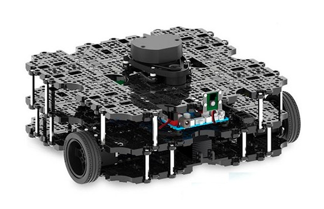

Part 3: Simulation¶
2D Simulation¶
2D Simulation is a great place to start exploring the turtlebot platform.
Let’s start by running the base turtlesim program to open our primary window.
ros2 run turtlesim turtlesim_node
This should generate a window with a turtle in the center. In a second terminal, run the following command to start up a node to control the turtle:
ros2 run turtlesim turtle_teleop_key
With this second terminal in focus, you should now be able to control the turtle using the arrow keys!
From here, we can also open the rqt utility to better understand our current ROS network. Within an unused terminal window, run the following command:
rqt
3D Simulation¶
One of the largest features of ROS is it’s ability to simulate and visualize 3D environments. This section will introduce some of the tools that allow for these features, and start to walk through the basics of how they work.
Opening the Simulator¶
Let’s open one of the tutorial worlds provided to us in Gazebo. To do so, run the following command in an unused terminal:
gazebo --verbose /opt/ros/foxy/share/gazebo_plugins/worlds/gazebo_ros_diff_drive_demo.world
Opening this up, we should see the Gazebo environment load in with a simple test robot. Explore some of the tools in the environment, and look around.
Since we know where the “world” file is that it’s loading, let’s take a look at it. Type the following command into a second unused terminal, to open up the world configuration:
gedit /opt/ros/foxy/share/gazebo_plugins/worlds/gazebo_ros_diff_drive_demo.world
Looking around, everything is all defined in XML format. The entire robot and the surrounding world are all defined within this file, along with all the rigging to make the robot move. Astute observers may also notice the commands located at the top of the file. Let’s try running one of them to control the robot.
In a third unusued terminal, run the following command:
ros2 topic pub /demo/cmd_demo geometry_msgs/Twist '{linear: {x: 1.0}}' -1
Building turtlebot3¶
Turtlebot3 is an introductory program used to teach people how to work with some of the ROS simulation software. We have included the Gazebo code for this section. However, you still need to build it on your machine.
Similarly to past sections, run the following commands to enter the Gazebo workspace and build the package:
cd ~/ros-workshop/gazebo_ws
colcon build --symlink-install
This will start building the Gazebo project for us to run simulations. Once complete, we need to run the following commands to run the final setup, same as in the previous step:
cd ~/ros-workshop/gazebo_ws
. install/setup.bash
Once we get this run, it’s time to open Gazebo. This may take some time, and can be started with the following command:
export TURTLEBOT3_MODEL=burger
ros2 launch turtlebot3_gazebo empty_world.launch.py
While in the simulator, you can create an additional node to allow you to control the robot. Run the following commands in a second terminal to add robot control based on arrow key inputs:
ros2 run turtlebot3_teleop teleop_keyboard
Once completed looking around the world, return to the terminal window and press Control + C to exit. Feel free to run the simulation in any of the available configurations, as defined below:
export TURTLEBOT3_MODEL=[ROBOT]
ros2 launch turtlebot3_gazebo [WORLD].launch.py
- [ROBOT]
The type of robot to run. This can either be burger, waffle, or waffle_pi
- [WORLD]
The type of world to load. This can either be empty_world, turtlebot3_world, or turtlebot3_house
As a note, the robots running in the simulation are created from actual robots that can be purchased. While pricy, custom CAD can be imported into Gazebo and controlled with a bit of configuration.
